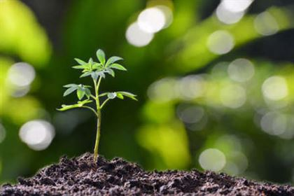
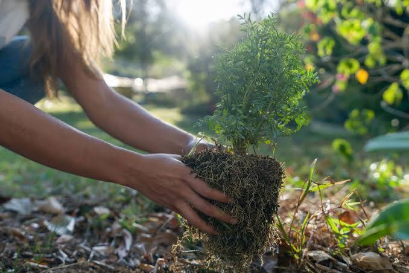
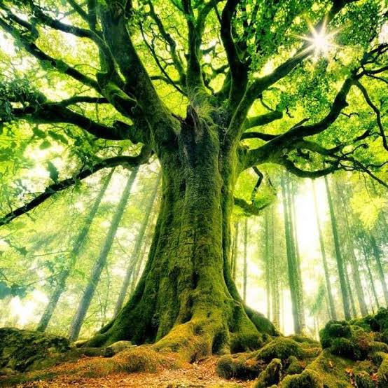
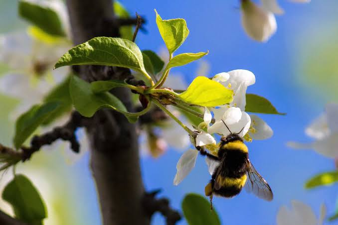
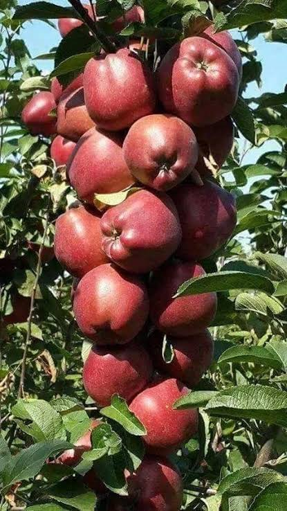

Bir Ağacın Yaşamı
-

Ağacın hayatı, içinde bir deve dönüşme potansiyelini barındıran bir tohumla başlar. Tohum çimlenmesi bu yolculuğun ilk adımıdır. Koşullar uygun olduğunda tohum suyu emer, şişer ve dış kabuğunu kırar. Bu süreç, tohumun büyümeye başlamasını tetikler. -
Kök ve sürgünler oluştuktan sonra fide aşaması başlar. Bu aşamada genç bitki, kök sistemini güçlendirmeye ve yaprak geliştirmeye odaklanır. Bu yapraklar bitkinin güneş ışığını enerjiye dönüştürdüğü fotosentez işlemi için gereklidir. 
-

Fide olgunlaştıkça fidan aşamasına girer. Bu noktada, genç ağaç daha hızlı büyümeye başlar. Gövdesi kalınlaşır, dalları yayılarak göğe doğru uzanır. Fidan aşaması, ağacın türüne ve yetiştiği koşullara bağlı olarak birkaç yıl sürebilir. -
Bir ağaç tam boyuna ulaştığında ve yayıldığında olgun sayılır. Bu aşamaya ulaşmak, türe bağlı olarak onlarca, hatta yüzyıllarca sürebilir. Olgun bir ağacın köklü bir kök sistemi, kalın bir gövdesi ve geniş bir yaprak gölgesi vardır. 
-


Ağaçlar, türlerinin devamını sağlamak için farklı yöntemlerle çoğalırlar. Bazı ağaçlar, arılar veya rüzgar gibi etkenlerle tozlaşan çiçekler açar. Bu çiçekler daha sonra içinde tohumlar bulunan meyvelere dönüşür. Elma, armut gibi ağaçlar bu şekilde ürer. Çam, köknar gibi iğne yapraklı ağaçlar ise kozalak adı verilen özel yapılar üretir. Bu kozalakların içinde tohumlar bulunur ve olgunlaşınca açılarak tohumları doğaya bırakır.